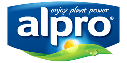
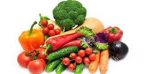
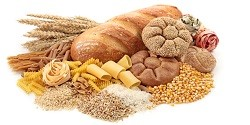

Meat-Free Nutrition
What you need to know generally about nutrition first!
Before I begin, I'd like to mention that Protein Metabolism and Carbohydrate Metabolism are factors that need to be considered when finding the correct ratio of Macro-nutrients. I recommend you experiment with your Macro-Ratio to find what works best with your body. Below is an example of the Macro-ratio I typically use on a daily basis to gain lean mass. (1-2lbs bodyweight per month)
Macro Ratio that I use:- Protein 1g - 1.5g per 1lb of body mass
- Carbs 2g - 2.5g per 1lb of body mass
- Fats 0.5g - 0.75g per 1lb of body mass
Best sources of Meat-free food for Macronutrients
Different food groups tend to be dominant in one type of macronutrient. Here are meat-free foods you can find which are dominant in each Macro-nutrient group. Please note: these vary for different types of vegetarians (some Vegetarians eat egg, some don't and I have also accounted for Vegans looking for nutrition advice)
Meat-Free High Protein Foods
Quite possibly one of the most controversial sources of Protein for Vegetarians and Vegans are Meat-free brands. I'd like to mention that some meat-free brands may contain egg and dairy which is something my fellow Lacto-Vegetarians and Vegans need to watch out for! Below are some good examples of Meat-free brands in my local area aswell as what they may contain.
Quorn Products
Warning: Quorn products typically contain egg! Big shout out to Quorn! Quorn was a godsend for me when I turned Vegetarian at 12. For lunch everyday my mum would always pack my sandwiches with Quorn ham instead of real ham and to be completely honest with you, I actually thought Quorn Ham tasted alot better! Quorn was by far my best way of substituting meat products to meat free products to satisfy the taste I had once craved for meat. Examples of Quorn Products: Quorn Ham, Quorn Sausages, Quorn Fillet, Quorn Nuggets, Quorn steak and the list goes on!
Linda McCartney Products
Linda McCartney has Vegetarian and Vegan products To be honest with you guys, I rely heavily on Linda McCartney Vegan Sausages to meet my daily protein needs! Each Linda McCartney Sausage has 10-11g of Plant Protein So I ideally pack around 3 for lunch and 3 for dinner, which equates to around 66g of my Protein intake daily! Something to note however is that Linda McCartney products can sometimes be high in fat and salt which is why I typically will keep the rest of my nutrition salt-free for the most part.
Soya-based products
Suitable for Vegans! Soya-based products are definitely my most favoured meat-free product on the go! It's easy to find a restaurant that serves a Vegan friendly Soya Burger that is packed with protein (but also be wary that some may contain high amounts of fat). I also typically use Alpro's Soya Milk as a substitute for Dairy Milk when I want to lower my Carbohydrate intake such as when I am progressing through a fatloss phase.
Vegetable Plant Protein
Suitable for Vegans! Credit is due to Bodybuilding.com for analysing 8 high-protein vegetables:- SoyBeans
- Edamame
- Lentils
- Brocolli
- Peas
- Asparagus
- Pumpkin Seeds
- Mung Bean Sprouts
Optimal Carbohydrate intake
An optimal diet plan must consist of a variety of sources of Carbohydrates. Understanding which carbohydrates are necessary for what portion of the day is imporant for not only physical health but also mental health and well-being. Not only are carbohydrates necessary for heavy weightlifting they are also necessary in promoting muscle growth through pre and post-workout nutrition. These carbs are very easy to find in your local area and are definitely worth considering for Muscle Progression .

Complex Carbohydrates
Complex Carbs are one of the most overlooked types of carbohydrates when looking at a well balanced diet. It makes sense that most meals for a bodybuilder should consist of slow release energy foods and that's exactly what Complex Carbs provides. My diet will mainly consist of wholegrain foods, since these are easy to obtain complex carb based foods on-the-go.Here are a list of complex carbs:
- Oats
- Wholegrain Bread, Rice & Pasta
- Sweet Potato

Simple Carbohydrates
Simple Carbs are very easy to obtain and can consist of healthy/non-healthy foods whereas complex carb foods are usually healthy. Simply put; Simple Carbs are sugar-based quick release energy foods and can provide useful for pre and post-workout nutrition. The reason for this is that workouts tend to last small durations of time (1-2 hours) and our bodies will work best with a quick release of energy throughout this duration. It is also worth noting that for post-workout nutrition; simple carbs are great for Glycogen Replenishment which promotes muscle progression. Here are a list of simple carbs:- Fruits: Banans, Apples, Oranges etc. (also great for micro-nutrition)
- High Glycemic White Bread, Rice & Pasta
- Sugary foods: Sweets, Chocolate Bars, Ice Cream (bad for health in large quantities)
Healthy Fatty foods
NOTE: I usually meet my fat intake through the carbs and protein based foods in my dietFat is essential in muscle building (unless you are taking a growth hormone), this is because fat is responsible for the amount of testosterone that is produced in your body. Why is this important? This is because this extra testosterone present in your body helps you to lift more weight, why do you think people who intake grown hormones (steroids) into their body gain muscle mass and strength at a considerably increased pace? It's because their testosterone levels are considerably higher then a natural weightlifter. Under NO circumstances whatsoever should you undertake a low-fat diet if you are bodybuilding drug-free

Good Healthy Fats
Unsaturated Fat is the only type of fat I recommend you supplement into your diet. Unsaturated fat is present in many different sources of food; which also provide high amounts of protein which makes them considerably favourable to Vegan and Vegetarian Bodybuilders alike. Below are a list of foods that are high in Unsaturated Fat:- Olive oil, rape seed oil, sunflower oils
- Almond & Cashew Nuts
- Avocados